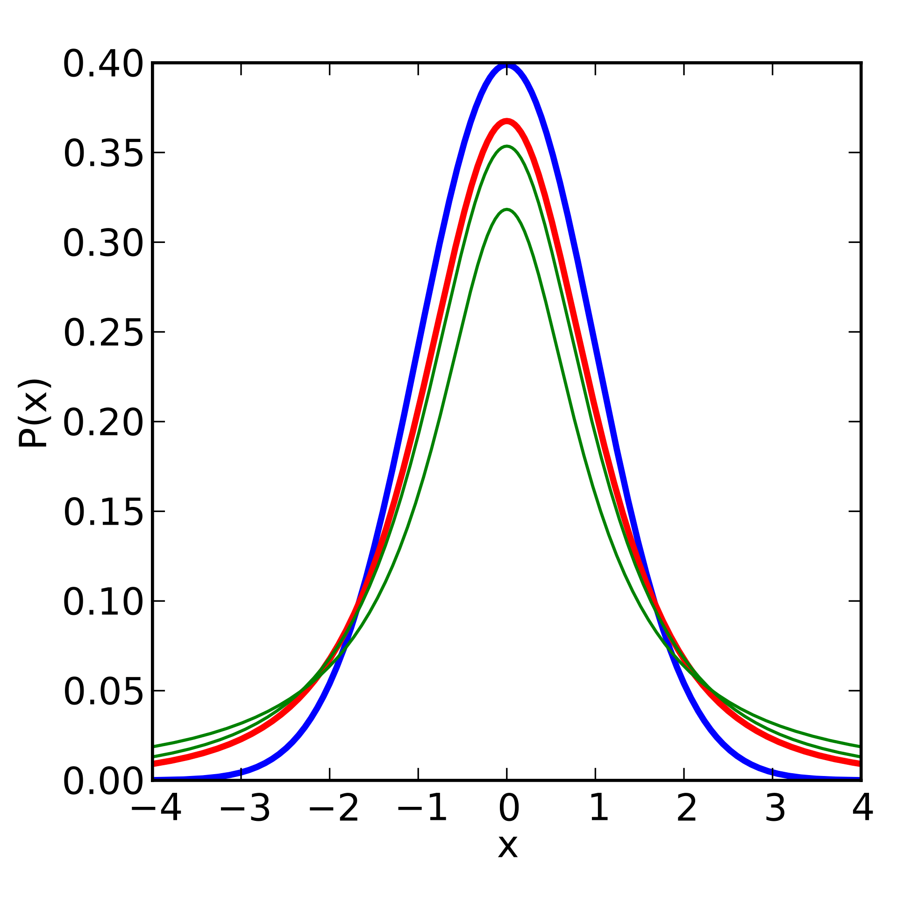

canines <- read_csv("https://figshare.com/ndownloader/files/15070175")11 Means testing
11.1 Introduction
Previously, we talked about normal distributions as a method for comparing samples to overall populations or comparing individuals to overall populations. However, sample sizes can introduce some error, and oftentimes we may not have access to an entire population. In these situations, we need a better test that can account for this changing error and the effect of different sample sizes. This is especially important when comparing two samples to each other. We may find a small sample from one population and a small sample for another, and we want to determine if these came from the same overall population as effectively as possible.
11.1.1 Parametric and Non-parametric tests
We have divided tests into parametric and non-parametric tests below. Parametric tests are those that follow a normal distribution; non-parametric tests violate this expectation.
Remember, parametric tests are more powerful and preferred in all circumstances. If your data are not parametric, you will first have to see if the data can be transformed. If the data cannot be transformed, then you can proceed with a non-parametric test.
11.1.2 A little history
Why is it called “Student’s t test”?
The distribution that we commonly refer to as a \(t\)-distribution is also sometimes known as a “Student’s \(t\)-distribution” as it was first published by a man with the pseudonym of “Student”. Student was in fact William Sealy Gossett, an employee of the Guinness corporation who was barred from publishing things by his employer to ensure that trade secrets were not made known to their competitors. Knowing that his work regarding statistics was important, Gossett opted to publish his research anyway under his pseudonym.
11.2 Dataset
For all of the examples on this page, we will be using a dataset on the morphology of canine teeth for identification of predators killing livestock (Courtenay 2019).
We want to set up some of these columns as “factors” to make it easier to process and parse in R. We will look at the column OA for these examples. Unfortunately, it is unclear what exactly OA stands for since this paper is not published at the present time.
canines$Sample <- as.factor(canines$Sample)
# we will be examining the column "OA"
canines$OA <- as.numeric(canines$OA)
summary(canines) Sample WIS WIM WIB
Dog :34 Min. :0.1323 Min. :0.1020 Min. :0.03402
Fox :41 1st Qu.:0.5274 1st Qu.:0.3184 1st Qu.:0.11271
Wolf:28 Median :1.1759 Median :0.6678 Median :0.25861
Mean :1.6292 Mean :1.0233 Mean :0.44871
3rd Qu.:2.4822 3rd Qu.:1.5194 3rd Qu.:0.74075
Max. :4.8575 Max. :3.2423 Max. :1.51721
D RDC LDC OA
Min. :0.005485 Min. :0.05739 Min. :0.02905 Min. :100.7
1st Qu.:0.034092 1st Qu.:0.28896 1st Qu.:0.22290 1st Qu.:139.2
Median :0.182371 Median :0.61777 Median :0.55985 Median :149.9
Mean :0.250188 Mean :0.88071 Mean :0.84615 Mean :148.4
3rd Qu.:0.361658 3rd Qu.:1.26417 3rd Qu.:1.26754 3rd Qu.:158.0
Max. :1.697461 Max. :3.02282 Max. :3.20533 Max. :171.5 11.3 Parametric tests
11.3.1 \(t\)-distribution
For these scenarios where we are testing a single sample mean from one or more samples we use a \(t\)-distributions. A \(t\)-distribution is a specially altered normal distribution that has been adjusted to account for the number of individuals being sampled. Specifically, a \(t\)-distributions with infinite degrees of freedom is the same as a normal distribution, and our degrees of freedom help create a more platykurtic distribution to account for error and uncertainty. The distribution can be calculated as follows:
\[ t = \frac{\Gamma(\frac{v+1}{2})}{\sqrt{\pi \nu}\Gamma(\frac{\nu}{2})}(1+\frac{t^2}{\nu})^{-\frac{(v+1)}{2}} \]
These \(t\)-distributions can be visualized as follows:

For all \(t\)-tests, we calculate the degrees of freedom based on the number of samples. If comparing values to a single sample, we use \(df = n -1\). If we are comparing two sample means, then we have \(df = n_1 + n_2 -2\).
Importantly, we are testing to see if the means of the two distributions are equal in a \(t\)-test. Thus, our hypotheses are as follows:
\(H_0: \mu_1 = \mu_2\) or \(H_0: \mu_1 - \mu_2 = 0\)
\(H_A: \mu_1 \ne \mu_2\) or \(H_A: \mu_1 - \mu_2 \ne 0\)
When asked about hypotheses, remember the above as the statistical hypotheses that are being directly tested.
In R, we have the following functions to help with \(t\) distributions:
dt: density function of a \(t\)-distributionpt: finding our \(p\) value from a specific \(t\) in a \(t\)-distributionqt: finding a particular \(t\) from a specific \(p\) in a \(t\)-distributionrt: random values from a \(t\)-distribution
All of the above arguments required the degrees of freedom to be declared. Unlike the normal distribution functions, these can not be adjusted for your data; tests must be performed using t.test.
11.3.2 \(t\)-tests
We have three major types of \(t\)-tests:
One-sample \(t\)-tests: a single sample is being compared to a value, or vice versa.
Two-sample \(t\)-tests: two samples are being compared to one another to see if they come from the same population.
Paired \(t\)-tests: before-and-after measurements of the same individuals are being compared. This is necessary to account for a repeat in the individuals being measured, and different potential baselines at initiation. In this case, we are looking to see if the difference between before and after is equal to zero.
We also have what we call a “true” \(t\)-test and “Welch’s” \(t\)-test. The formula for a “true” \(t\) is as follows:
\[ t = \frac{\bar{x}_1 - \bar{x}_2}{s_p\sqrt{\frac{1}{n_1}+\frac{1}{n_2}}} \]
Where \(s_p\) is based on the “pooled variance” between the samples. This can be calculated as follows:
\[ s_p = \sqrt{\frac{(n_1-1)(s_1^2)+(n_2-1)(s_2^2)}{n_1+n_2 -2}} \]
Whereas the equation for a “Welch’s” \(t\) is:
\[ t = \frac{\bar{x}_1 - \bar{x}_2}{\sqrt{\frac{s_1^2}{n_1}+\frac{s_2^2}{n_2}}} \]
Welch’s \(t\) also varies with respect to the degrees of freedom, calculated by:
\[ df = \frac{\frac{s_1^2}{n_1}+\frac{s_2^2}{n_2}}{\frac{(\frac{s_1^2}{n_1})^2}{n_1-1}+\frac{(\frac{s_2^2}{n_2})^2}{n_2-1}} \]
OK, so why the difference?
A \(t\)-test works well under a certain set of assumptions, include equal variance between samples and roughly equal sample sizes. A Welch’s \(t\)-test is better for scenarios with unequal variance and small sample sizes. If sample sizes and variances are equal, the two \(t\)-tests should perform the same.
Because of this, some argue that “Welch’s” should be the default \(t\)-test, and in R, Welch’s is the default \(t\)-test. If you want to specify a “regular” \(t\)-value, you will have to set the option var.equal = TRUE. (The default is var.equal = FALSE).
In this class, we will default to a Welch’s test in all instances.
If you choose to do a Student’s t-test, you must do the following:
Download the
carlibraryUse the
leveneTestfunction to see if variances are equal between populations
We do not cover this in depth here, but be aware of this difference. For more information, see Ruxton (2006).
11.3.3 One-sample \(t\)-tests
Let’s look at the values of all of the dog samples in our canines dataset.
dogs <- canines |>
filter(Sample == "Dog") |>
select(Sample, OA)
xbar <- mean(dogs$OA)
sd_dog <- sd(dogs$OA)
n <- nrow(dogs)Now we have stored all of our information on our dog dataset. Let’s say that the overall populations of dogs a mean OA score of \(143\) with a \(\sigma = 1.5\). Is our sample different than the overall population?
t.test(x = dogs$OA,
alternative = "two.sided",
mu = 143)
One Sample t-test
data: dogs$OA
t = -0.74339, df = 33, p-value = 0.4625
alternative hypothesis: true mean is not equal to 143
95 percent confidence interval:
138.4667 145.1070
sample estimates:
mean of x
141.7869 As we can see above, we fail to reject the null hypothesis that our sample is different than the overall mean for dogs.
11.3.4 Two-sample \(t\)-tests
Now let’s say we want to compare foxes and dogs to each other. Since we have all of our data in the same data frame, we will have to subset our data to ensure we are doing this properly.
# already got dogs
dog_oa <- dogs$OA
foxes <- canines |>
filter(Sample == "Fox") |>
select(Sample, OA)
fox_oa <- foxes$OANow, we are ready for the test!
t.test(dog_oa, fox_oa)
Welch Two Sample t-test
data: dog_oa and fox_oa
t = -6.3399, df = 72.766, p-value = 1.717e-08
alternative hypothesis: true difference in means is not equal to 0
95 percent confidence interval:
-19.62289 -10.23599
sample estimates:
mean of x mean of y
141.7869 156.7163 As we can see, the dogs and the foxes significantly differ in their OA measurement, so we reject the null hypothesis that \(\mu_{dog} = \mu_{fox}\).
11.3.5 Paired \(t\)-tests
I will do a highly simplified version of a paired \(t\)-test here just for demonstrations sake. Remember that you want to used paired tests when we are looking at the same individuals at different points in time.
# create two random distributions
# DEMONSTRATION ONLY
# make repeatable
set.seed(867)
t1 <- rnorm(20,0,1)
t2 <- rnorm(20,2,1)Now we can compare these using paired = TRUE.
t.test(t1, t2, paired = TRUE)
Paired t-test
data: t1 and t2
t = -7.5663, df = 19, p-value = 3.796e-07
alternative hypothesis: true mean difference is not equal to 0
95 percent confidence interval:
-3.107787 -1.760973
sample estimates:
mean difference
-2.43438 As we can see, we reject the null hypothesis that these distributions are equal in this case. Let’s see how this changes though if we set paired = FALSE.
t.test(t1, t2)
Welch Two Sample t-test
data: t1 and t2
t = -8.1501, df = 37.48, p-value = 8.03e-10
alternative hypothesis: true difference in means is not equal to 0
95 percent confidence interval:
-3.039333 -1.829428
sample estimates:
mean of x mean of y
-0.07258938 2.36179080 This value differs because, in a paired test, we are looking to see if the difference between the distributions is \(0\), while in the independent (standard) test we are comparing the overall distributions of the samples.
11.4 Non-parametric tests
The following tests should be used when no data transformations have been successful with your dataset.
11.4.1 Wilcoxon tests
When data (and the differences among data) are non-normal, they violate the assumptions of a \(t\)-test. In these cases, we have to do a Wilcoxon test (also called a Wilcoxon signed rank test). In R, the command wilcox.test also includes the Mann-Whitney \(U\) test for unpaired data and the standard Wilcoxon test \(W\) for paired data.
11.4.2 Mann-Whitney \(U\)
For this test, we would perform the following procedures to figure out our statistics:
- Rank the pooled dataset from smallest to largest, and number all numbers by their ranks
- Sum the ranks for the first column and the second column
- Compute \(U_1\) and \(U_2\), comparing the smallest value to a Mann-Whitney \(U\) table.
The equations for these statistics are as follows, where \(R\) represents the sum of the ranks for that sample:
\[ U_1 = n_1n_2+\frac{n_1(n_1+1)}{2}-R_1 \]
\[ U_2 = n_1n_2 + \frac{n_2(n_2+1)}{2} - R_2 \]
In R, this looks like so:
wilcox.test(t1, t2, paired = FALSE)
Wilcoxon rank sum exact test
data: t1 and t2
W = 11, p-value = 2.829e-09
alternative hypothesis: true location shift is not equal to 011.4.3 Wilcoxon signed rank test
For paired samples, we want to do the Wilcoxon signed rank test. This is performed by:
- Finding the difference between sampling events for each sampling unit.
- Order the differences based on their absolute value
- Find the sum of the positive ranks and the negative ranks
- The smaller of the values is your \(W\) statistic.
In R, this test looks as follows:
wilcox.test(t1, t2, paired = TRUE)
Wilcoxon signed rank exact test
data: t1 and t2
V = 0, p-value = 1.907e-06
alternative hypothesis: true location shift is not equal to 011.5 Confidence intervals
In \(t\) tests, we are looking at the difference between the means. Oftentimes, we are looking at a confidence interval for the difference between these means. This can be determined by:
\[ (\bar{x}_1-\bar{x}_2) \pm t_{crit}\sqrt{\frac{s_p^2}{n_1}+\frac{s_p^2}{n_2}} \]
This is very similar to the CI we calculated with the \(Z\) statistic. Remember that we can use the following function to find our desired \(t\), which requires degrees of freedom to work:
qt(0.975, df = 10)[1] 2.22813911.6 Homework: One Sample
11.6.1 Answer each question. Perform all necessary tests. Perform transformations on the data if required.
# install.packages("lme4") # required for "sleepstudy" dataset
library(lme4)Loading required package: Matrix
Attaching package: 'Matrix'The following objects are masked from 'package:tidyr':
expand, pack, unpackdata("sleepstudy")
head(sleepstudy) Reaction Days Subject
1 249.5600 0 308
2 258.7047 1 308
3 250.8006 2 308
4 321.4398 3 308
5 356.8519 4 308
6 414.6901 5 308# install.packages("MASS") # required for "galaxies" dataset
library(MASS)
Attaching package: 'MASS'The following object is masked from 'package:dplyr':
selectdata("galaxies")
head(galaxies)[1] 9172 9350 9483 9558 9775 1022711.6.2 Question 1:
These are the test scores of 12 students on a quiz. The quiz was out of 100 points. Suppose we want to test whether the mean score differs significantly from a predicted average of 70.
quiz_scores <- c(75, 82, 68, 90, 73, 85, 77, 79, 88, 91, 83, 80) State the null and alternative hypotheses. (2 pts)
Are these data normal? (2 pts)
Is the mean score significantly different from the expected result? (2 pts)
Did the students do better or worse than expected, if there is a difference? (2 pts)
If applicable, repeat the above steps for a one-tailed test. How does a one-tailed test change the results?
11.6.3 Question 2:
The following is a list of reported study hours for Biostats per week. We expect the class average to be about three hours a week. Using this dataset, answer the following questions:
study_hours <- c(0.5, 3.0, 2.5, 4.5, 3.0, 1.5, 2.0, 3.5, 6, 1.0) State the null and alternative hypotheses. (2 pts)
Are these data normal? (2 pts)
Do students spend the expected amount of time studying per week? (2 pts)
Do students spend more or less time studying per week, if there is a difference? (2 pts)
If applicable, perform the above as a one-tailed test to see if students study less than expected. How does this change the results?
11.6.4 Question 3:
The following dataset records the reaction times of people who have had less than three hours of sleep on the night before this test. Using the reaction time column, perform a \(t\)-test to determine if these people have a statistically different reaction time than the human average (250 ms).
reaction_times <- sleepstudy$ReactionState the null and alternative hypotheses. (2 pts)
Are these data normal? (2 pts)
Is the mean score significantly different from the expected result? (2 pts)
Are the people in the dataset slower or faster than average, if there is a difference? What might be the reason for this? (2 pts)
If applicable, perform the above as a one-tailed test to see if reactions times are faster or slower than expected. How does this change the results?
11.6.5 Question 4:
Whole milk is expected to be around 3.25% fat. Researchers from Florida wanted to determine if this was the case and used two methods to measure the fat percentage in the milk they tested. Using the enzymatic method ($triglyceride), determine if the fat percentage of this milk was significantly different from the 3.25% expected.
milk <- read.csv("https://users.stat.ufl.edu/~winner/data/milkfat_measure.csv")
milk_fats <- milk$triglyceride
milk_fats [1] 0.96 1.16 0.97 1.01 1.25 1.22 1.46 1.66 1.75 1.72 1.67 1.67 1.93 1.99 2.01
[16] 2.28 2.15 2.29 2.45 2.40 2.79 2.77 2.64 2.73 2.67 2.61 3.01 2.93 3.18 3.18
[31] 3.19 3.12 3.33 3.51 3.66 3.95 4.20 4.05 4.30 4.74 4.71 4.71 4.74 5.23 6.21State the null and alternative hypotheses.(2 pts)
Is the mean score significantly different from the expected result? (4 pts)
Is the milk fattier or leaner than expected, if there is a difference? (2 pts)
If applicable, perform the above as a one-tailed test to see if fat content is lower than expected. How does this change the results?
11.6.6 Question 5:
Galaxies are rapidly moving away from us at various speeds. Previous studies had offered an average recession rate of 20,000 km/s. Data collected using redshift allows us to calculate the actual speed of recession of a galaxy. Using the data from R. J. Roeder (1990), saved as “galaxies”, determine if the average galaxy is actually receding at the previously estimated rate.
head(galaxies)[1] 9172 9350 9483 9558 9775 10227State the null and alternative hypotheses. (2 pts)
Is the mean score significantly different from the expected result? (4 pts)
Are the galaxies moving away faster or slower, if there is a difference? (2 pts)
If applicable, perform the above as a one-tailed test that you feel is most appropriate. Compare these results to your previous results.
11.7 Homework: Two-sample means testing
NOTE: Assume\(\alpha = 0.05\) for every question.
If you need to do a transformation, try every transformation and make sure you choose the one that achieves normality the best.
11.7.1 Question 1: Tail wagging
The speed at which dogs wag their tail is often considered to be a proxy for how happy the dogs are, and they note that dogs seem happiest when they see their owners. Researchers gathered ten dogs and measured the rate of their tail wags per second (1) when they were told their owners name vs. (2) when they saw their owner approaching. They obtained the following dataset:
owner_name <- c(2.0,1.3,3.4,2.6,2.6,0.8,2.6,1.9,0.3,0.9)
owner_sight <- c(2.8,4.3,3.0,3.9,2.7,3.4,3.3,3.7,2.8,3.4)
dog_data <- cbind(owner_name, owner_sight) |>
as.data.frame()What is the goal of this study?
What are the null and alternative hypotheses for this study? Make sure your hypotheses reflect whether this is a one-tailed or a two-tailed test, whichever is most appropriate for the situation. You will not be reminded about tails on future questions.
Perform the appropriate test for this dataset. Don’t forget to check for normality and do the other necessary steps; you will not be reminded to do this on future questions.
State your conclusion for this study.
11.7.2 Question 2: The maximum airspeed velocity of a swallow
Inspired by Monty Python and the Holy Grail, you decide to compare the maximum airspeed velocity of African and European swallows, namely, the European Red-rumped Swallow Cecropis rufula African Red-rumped Swallow Cecropis melanocrissus to see if they differ in some way. You measure one group of each of these swallows and get the following dataset:
rufula <- c(68.6,71.7,69.9,74.9,70.2,64.9,70.8,74.2,67.1,70.8,75.0,70.7)
melanocrissus <- c(73.8,82.1,70.5,75.4,73.4,67.4,71.5,75.9,68.6,72.4,67.5,73.8)
swallows <- cbind(rufula, melanocrissus) |>
as.data.frame()What is the goal of this study?
What are the null and alternative hypotheses for this test? Write them mathematically or as sentences, whichever is easiest for you.
Perform the appropriate test for the dataset.
State your conclusion for this study.
11.7.3 Question 3: Heart rate and salsa
You decide to compare the heart rate of two different groups of volunteers, one where the students were fed habañero salsa and one where the students were fed jalapeño salsa. You predict that students’ heart rates will be higher with the jalapeño salsa. You obtain the following data:
habanero <- c(105.5,100.7,96.5,107.3,100.6,96.3,99.5,
98.9,107.4,103.8,109.3,107.7,103.2,104.5,
95.4,103.3,107.5,101.8,106.1,102.6)
jalapeño <- c(109.1,111.7,118.6,111.1,100.5,118.7,117.5,
102.1,94.9,104.0,109.2,101.1,113.0,111.3,97.6,
109.2,93.4,103.4,90.3,109.2)
peppers <- cbind(jalapeño, habanero) |> as.data.frame()11.7.4 Question 4: Iris
You are interested in seeing if the petal width of Iris versicolor is different than that of Iris virginica. Note: for this problem, you will have to:
Isolate the species of interest
Isolate the variables of interest
Perform the relevant test
The dataset is available in base R:
head(iris) Sepal.Length Sepal.Width Petal.Length Petal.Width Species
1 5.1 3.5 1.4 0.2 setosa
2 4.9 3.0 1.4 0.2 setosa
3 4.7 3.2 1.3 0.2 setosa
4 4.6 3.1 1.5 0.2 setosa
5 5.0 3.6 1.4 0.2 setosa
6 5.4 3.9 1.7 0.4 setosaWhat is the goal of this study?
What are the hypotheses of this study?
Perform the relevant test for assessing the hypotheses.
Write out your conclusion for the test.
11.7.5 Question 5: Bacteria counts
You are tasked by your biology professor to compare the counts of bacteria grown from two-different media, media A and media B. Your professor thinks that media A will have more bacteria than media B. You count the number of colony forming units (CFUs) on each media and get the following data.
media_A <- c(16,14,12,16,16,16,13,16,15,15,
15,15,15,15,17,15,16,15,15,13,
15,15,15,14,14,14,15,15,15,15,
14,14,14,16,17,15,13,14,16,16)
media_B <- c(12,12,12,12,11,11,11,13,12,11,
11,11,10,11,13,10,10,11,17,15,
13,14,18,16,19,15,16,16,15,19,
16,17,16,20,16,15,19,16,18,18)What is the goal for this study?
What are the hypotheses for this study?
Perform the relevant test for assessing the hypotheses.
Write out your conclusion for the test.
11.7.6 Question 6: Flint, Michigan
In 2014, the city of Flint, Michigan changed their water source from Lake Huron and the Detroit River to the nearby Flint River. This change in water source resulted in an elevation of lead levels in the water, exposing approximately 100,000 people to lead poisoning. It took six years and more than $400 million in funds to fix the water issue in Flint, Michigan, and the human health effects may take years to quantify.
The code below will section off actual data from the lead water crisis in Flint, Michigan into two groups. Your goal is to determine if lead levels are similar between those groups; lead levels are contained in the column lead and are given in parts per billion.
library(tidytuesdayR)
tuesdata <- tidytuesdayR::tt_load('2025-11-04')---- Compiling #TidyTuesday Information for 2025-11-04 ----
--- There are 2 files available ---
── Downloading files ───────────────────────────────────────────────────────────
1 of 2: "flint_mdeq.csv"
2 of 2: "flint_vt.csv"flint_mdeq <- tuesdata$flint_mdeq |>
dplyr::select(-notes) |>
na.omit() |>
dplyr::select(-lead2)
group1 <- flint_mdeq[1:20,]
group2 <- flint_mdeq[21:40,]What is the goal of the analysis above?
State the hypotheses for the analysis above.
Perform the appropriate test.
State a conclusion for the test.
According to the EPA, if more than 10% of tap water samples exceed the lead action level of 15 parts per billion, then further actions must be taken to mitigate and help control the lead, as well as to educate the public.
What is the percent of samples in the
flint_mdeqthat are above the 15 parts per billion threshold?What is the average lead level in the town?
Is the average lead level below the 15 parts per billion threshold? State a null and alternative hypothesis for this test, and then perform the relative hypothesis.